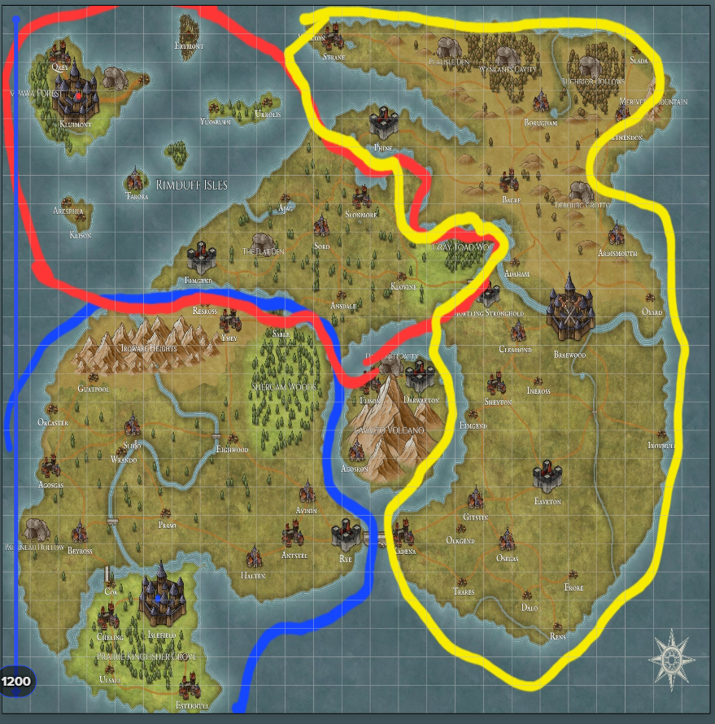

Dayner - A World of Kingdoms

1. Overview of Dayner
The continent of Dayner stretches approximately 1,040 miles from the northernmost island of Kluimont down to the southern shores of Islefield, with an east-to-west span of around 800 miles.
2. Political Divisions
Dayner is divided into three large kingdoms and an independent volcanic isle:
- Braewood Kingdom - The largest and most politically dominant realm.
- Islefield Kingdom - A southern kingdom known for its maritime trade and elven influence.
- Kluimont Kingdom - A secluded island kingdom with deep magical roots.
- Lavalto Isle - A fiercely independent volcanic island, home to secretive rulers.
3. Population & Culture
The estimated population of Dayner is between 2 to 2.5 million, with diverse racial and cultural distributions across the kingdoms.
4. Notable Regions
- Braewood - The seat of power, home to a vast human population with scattered dwarven strongholds.
- Islefield - Dominated by elven aristocracy, renowned for its rich farmlands and skilled sailors.
- Kluimont - A kingdom of secrets, magic, and rumored ties to an ancient dragon.
- Lavalto - Ruled by an enigmatic vampiric elite, shrouded in dark legends and dangerous secrets.
5. Key Conflicts & Tensions
From historical battles to modern-day political maneuvering, Dayner is a land rife with tensions:
- Braewood's military strength contrasts with Kluimont’s arcane advancements.
- Elven rule in Islefield maintains delicate peace with human factions.
- Lavalto's dark rulers hold unknown power over trade and politics.